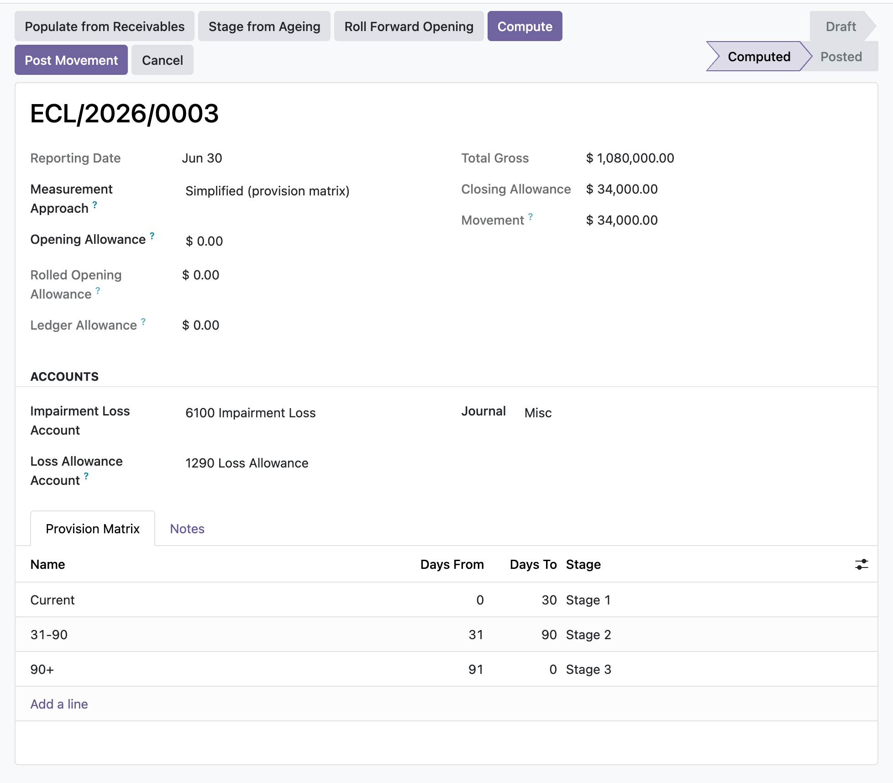

Measure the loss allowance on trade receivables with a provision matrix or a general 3-stage model, then post only the movement to impairment loss in one balanced entry.
The run recognises the movement from the opening allowance to the closing allowance in one balanced entry, debiting impairment loss and crediting the loss-allowance contra account on an increase and reversing on a decrease (IFRS 9.5.5.8), never re-posting the full allowance.
The simplified provision matrix measures lifetime ECL as gross carrying amount at each bucket's loss rate. The general approach measures EAD times LGD times PD, using the 12-month PD for Stage 1 and the lifetime PD for Stages 2 and 3.
The opening allowance defaults by roll-forward from the prior posted run's closing allowance, and a warning fires when it disagrees with the loss-allowance ledger balance carried into the period, so the roll-forward is confirmed before you post.
Open a run for the reporting date, define your ageing buckets and loss rates, and click Populate from Receivables to age open, unreconciled invoices by days past due into each bucket at the residual amount. The opening allowance rolls forward from last quarter automatically; if it does not tie to the loss-allowance ledger a warning tells you before you post. Compute, then post: the manager approves and the run books just the movement to impairment loss. Need to correct it later? Only a manager can reverse it, which reopens the matrix for editing.
In the shipped code today, each one a place where a cheaper module silently does the wrong thing.
Posting books only the closing-less-opening movement, so a period where the allowance falls debits the contra account and credits impairment loss as a genuine reversal, and a nil movement is refused with an explicit message rather than posting an empty entry.
Populate reads only posted, unreconciled receivable lines dated on or before the reporting date, uses each line's residual amount, skips credits and fully-settled lines, and treats not-yet-due amounts as zero days overdue so they land in the current bucket.
The opening allowance is defaulted from the prior posted run, and the ledger tie-out negates the contra account's credit balance and excludes this run's own move, so it compares like for like and flags a real mismatch.
Once posted or reversed, the reporting date, accounts, journal, opening allowance and every bucket are frozen against direct ORM writes, and buckets cannot be added, edited, moved in or deleted, so the recognised figure can never silently drift from the entry that was booked.
A database constraint allows only one run per company per reporting date, and a posted run cannot be deleted, so the allowance history stays a clean, single-valued roll-forward chain.
odoo 19 expected credit loss, IFRS 9 ECL odoo, provision matrix odoo, simplified approach trade receivables, loss allowance contra account, impairment of receivables odoo, bad debt allowance IFRS 9, ageing buckets loss rate, general 3-stage ECL model, EAD LGD PD odoo, expected credit loss journal entry, roll-forward loss allowance, IFRS 9.5.5.15 simplified approach, receivables impairment community

Expected credit loss run, computedThe IFRS 9 provision matrix staged by days past due, with the total gross exposure, the closing loss allowance, and the movement recognised to profit or loss.
Premium ERP Heritage modules that extend the same stack, each built to the same engineering bar.
A dependency free asynchronous job queue that runs long running and fan out work out of band of the request that...
Post Irish payslips to the general ledger on the Irish chart of accounts
Interactive drag and drop Gantt planner for Odoo 17 Community project tasks with a deterministic server side sche...
Employment Hero Connector is the integration core of the ERP Heritage Employment Hero suite, providing per compan...
The United Kingdom country pack for the ERP Heritage Employment Hero integration